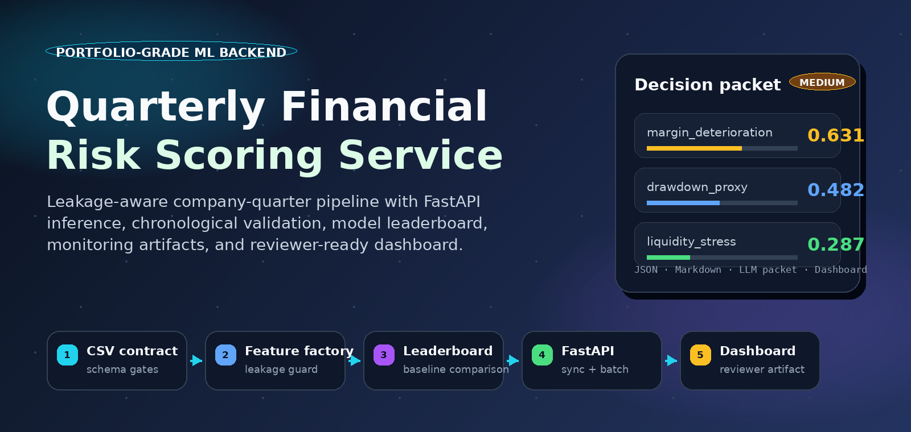
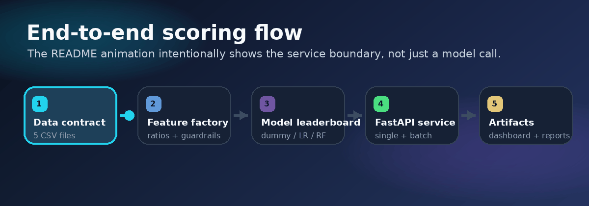
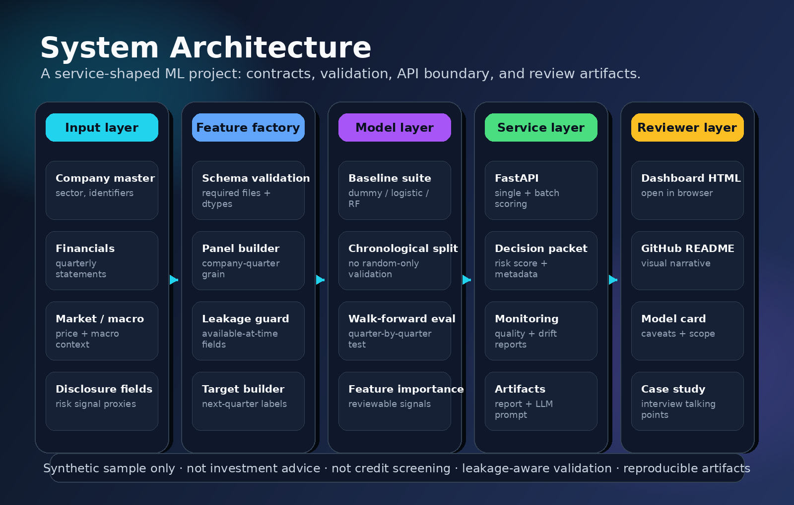
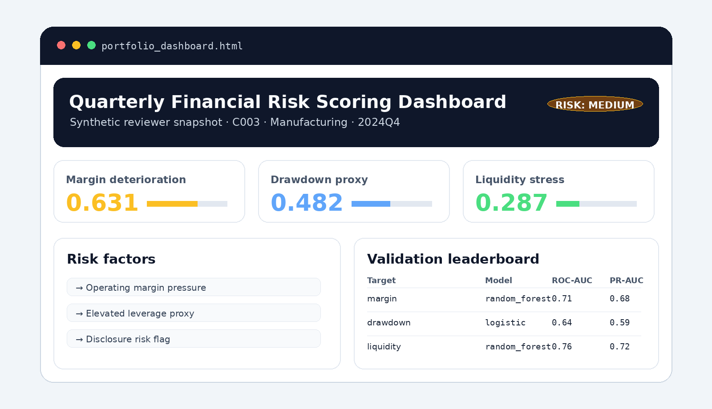

리뷰어가 직접 해볼 수 있음
슬라이더, 프리셋 시나리오, 배치 비교, CSV 붙여넣기, JSON 복사/다운로드까지 전부 브라우저에서 동작합니다.
GitHub Pages · browser-only live demo
설치 없이 바로 체험하는 금융 리스크 스코어링 포트폴리오 데모입니다. 샘플 회사를 고르고 지표를 바꾸면 decision packet, 설명, 배치 비교, CSV 결과가 즉시 생성됩니다.
Synthetic example only. Not investment, lending, credit-screening, or real corporate-rating advice.

슬라이더, 프리셋 시나리오, 배치 비교, CSV 붙여넣기, JSON 복사/다운로드까지 전부 브라우저에서 동작합니다.
GitHub Pages는 정적 사이트라 Python/FastAPI를 직접 실행하지 않습니다. 여기서는 설명 가능한 JS simulator를 쓰고, 실제 파이프라인은 저장소의 FastAPI에서 실행합니다.
논문식 성능 주장이 아니라 데이터 계약, 누수 방지, API, 모니터링, 리포트 산출물까지 연결하는 서비스형 ML 감각을 보여줍니다.
Live company lab
아래 값은 synthetic sample입니다. 수치 조작 → 스코어 재계산 → 설명 생성 → JSON export 흐름을 즉시 확인할 수 있습니다.
Current result
-
입력값을 바탕으로 리스크 신호를 생성합니다.
Batch scoring
포트폴리오 리뷰어가 “서비스라면 batch도 되나?”라고 볼 때 바로 보여주는 영역입니다.
| Rank | Company | Sector | Risk level | Overall | Margin | Market | Liquidity | Main factor |
|---|
Bring your own sample
서버 전송 없이 현재 브라우저 안에서만 파싱합니다. 공개 페이지라 실제 기업 민감 데이터는 넣지 않는 게 안전합니다.
| Company | Risk | Overall | Top factor |
|---|
API preview
아래 request/response mock은 현재 브라우저 입력값에서 생성됩니다. 실제 실행은 저장소의 FastAPI에서 합니다.
정적 JS simulator. 설치 없이 제품 감각을 보여주기 위한 공개 체험판입니다.
site/index.html + site/app.js
CSV validation, feature engineering, model leaderboard, report artifact 생성을 담당합니다.
app/main.py
decision packet, risk report, monitoring report, dashboard snapshot, LLM prompt packet을 생성합니다.
artifacts/requests/*
Pipeline and architecture


Portfolio dashboard

Run the real backend
python -m venv .venv
# Windows: .\.venv\Scripts\Activate.ps1
source .venv/bin/activate
pip install -r requirements.txt
python run_demo.py --company-id C003uvicorn app.main:app --reload
curl -X POST http://127.0.0.1:8000/v1/predictions \
-H "Content-Type: application/json" \
-d '{"company_id":"C003","input_dir":"data/input/sample"}'